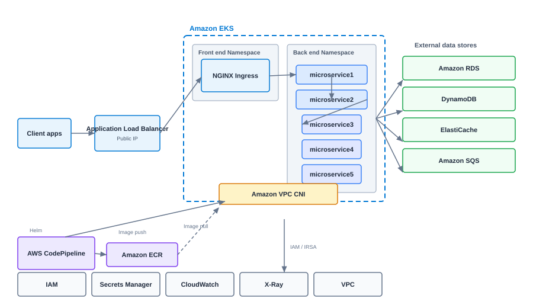

Microservices Architecture on Amazon EKS
Reference architecture for running microservices on Amazon EKS with ALB ingress, ECR, and managed AWS data services.
After Amazon EKS reached general availability in 2018, we began standardizing Kubernetes deployments for enterprise clients at VF Interactive. This reference design reflects patterns I have applied across production AWS environments.

Traffic flow
Client applications connect through an Application Load Balancer with a public IP. The ALB routes HTTP traffic to an NGINX Ingress Controller running in a frontend namespace inside the EKS cluster. The ingress distributes requests to backend microservices based on path or host rules.
Microservice layout
Backend services run in a dedicated namespace. microservice1 handles API gateway responsibilities, microservice2 coordinates business logic, and microservice3 through microservice5 own domain-specific data access. Each service scales independently through Kubernetes Deployments and Horizontal Pod Autoscalers.
CI/CD and images
AWS CodePipeline and CodeBuild build container images on each merge. Images push to Amazon ECR. Helm charts deploy releases into EKS namespaces. The cluster pulls images from ECR using IAM roles for service accounts.
Data and messaging
External data stores sit outside the cluster: Amazon RDS for relational data, DynamoDB for key-value workloads, ElastiCache for caching, and Amazon SQS for asynchronous messaging between services.
Security and operations
IAM provides RBAC integration through IRSA. AWS Secrets Manager stores credentials. Amazon VPC CNI assigns pod IPs from your VPC. CloudWatch and X-Ray deliver logs, metrics, and distributed tracing.
Implementation Checklist
Provision EKS with private API endpoints where possible. Enable IRSA for pod-level AWS permissions. Deploy the AWS Load Balancer Controller before exposing services. Configure cluster autoscaling and horizontal pod autoscaling per service. Set resource requests and limits on every deployment.
Production Hardening
Enable control plane logging. Restrict security groups to minimum required ports. Use separate AWS accounts per environment. Scan images in ECR on push. Run pod security standards or OPA policies to block privileged containers.
When to Choose EKS
EKS fits teams already invested in AWS who need Kubernetes without managing the control plane. If your workloads are simple and stateless, ECS or Lambda may be simpler. Choose EKS when service count, team autonomy, or portability requirements justify Kubernetes operational overhead.
Networking Deep Dive
The AWS VPC CNI assigns real VPC IP addresses to pods, which simplifies integration with existing security groups and network appliances but requires careful IP planning. Ensure your VPC CIDR and subnet sizes accommodate peak pod count. Use custom networking or prefix delegation for large clusters. Security groups attach directly to pod ENIs in some configurations, giving fine-grained control at the cost of complexity.
For service-to-service communication inside the cluster, prefer ClusterIP services with network policies restricting east-west traffic. Expose only the ingress controller and API gateway through the ALB. Internal microservices should never have public endpoints.
Observability Stack
Deploy CloudWatch Container Insights or Prometheus with AMP (Amazon Managed Prometheus) for metrics. Ship logs to CloudWatch Logs with structured JSON. Enable X-Ray tracing on ingress and critical services. Correlate traces with logs using shared trace IDs. Dashboards should show golden signals per service: latency, traffic, errors, and saturation.